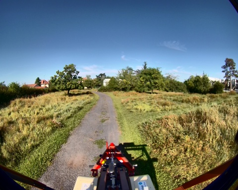
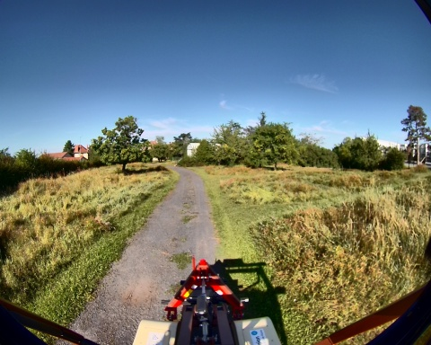
 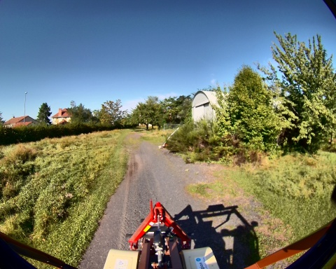
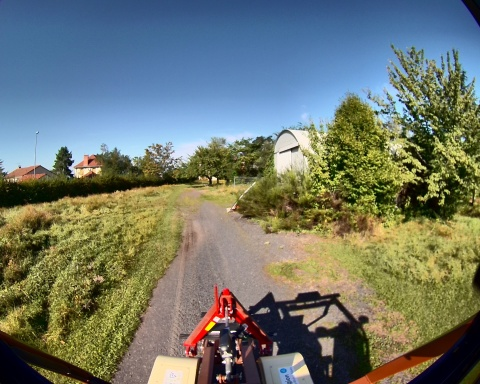 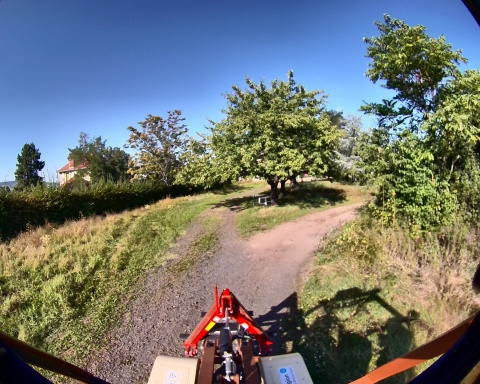
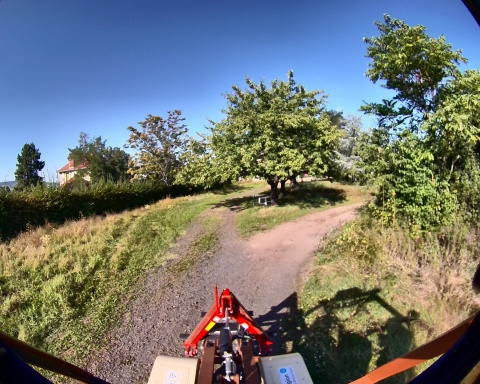


 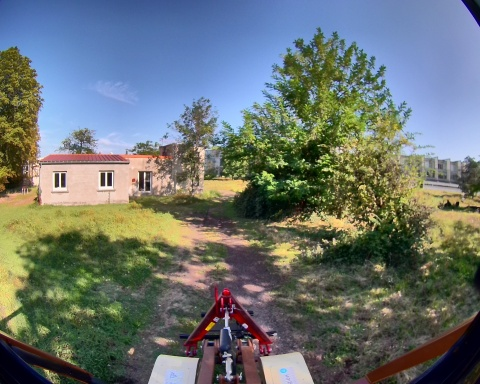
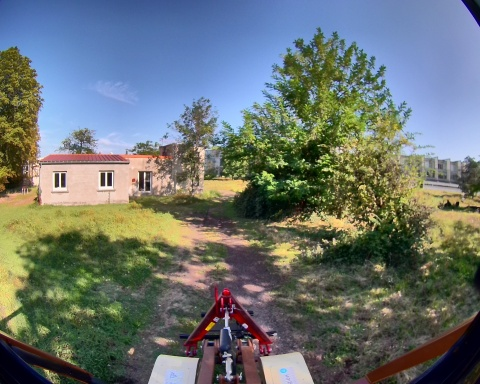
 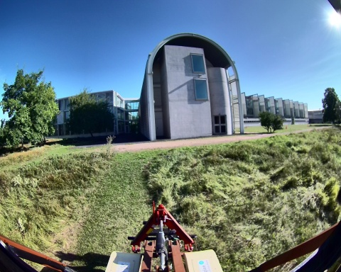
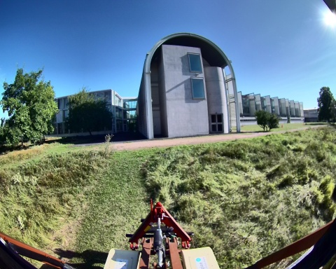 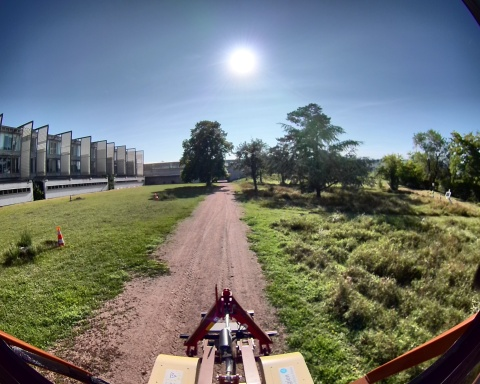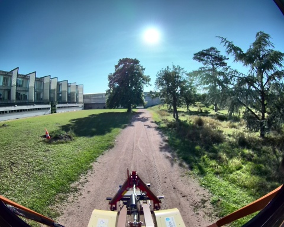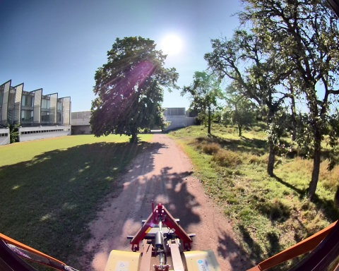
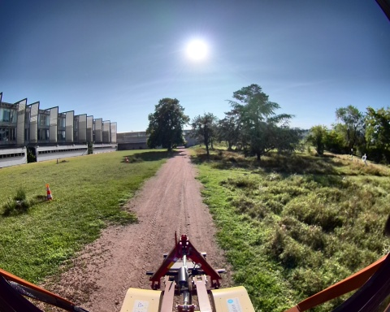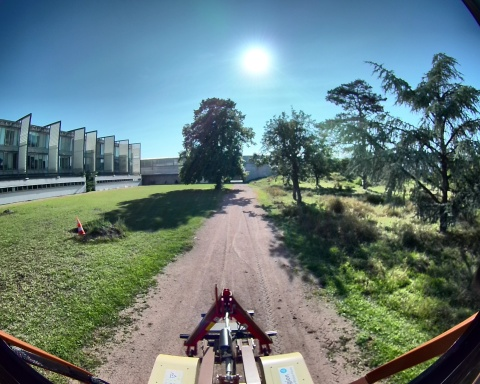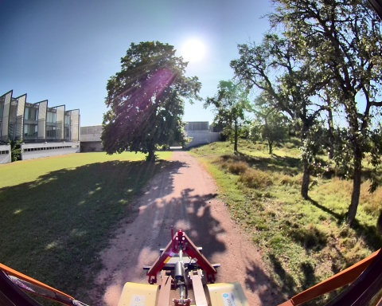Chemin complet : /data/synchro_data/Innodura/Agrivia/Données/2024_bag/slam_icp_foret_c
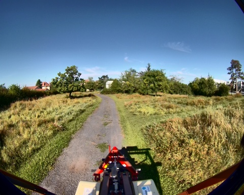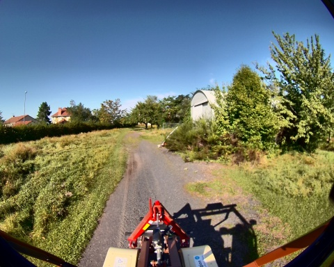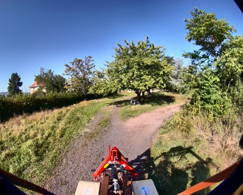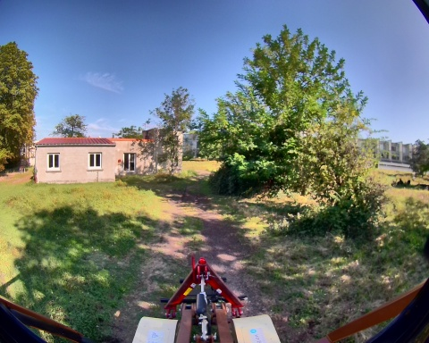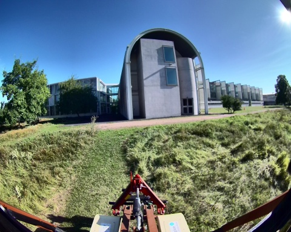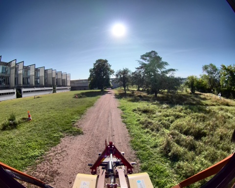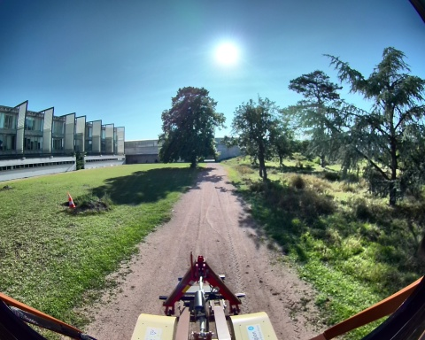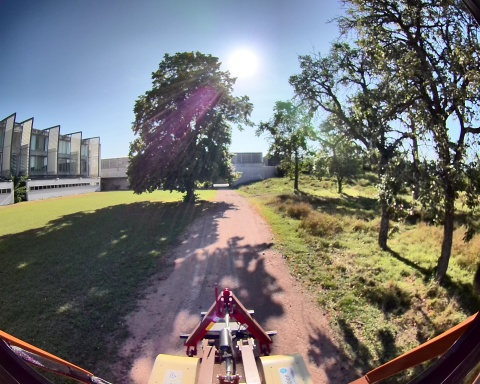
Files: slam_icp_foret_c_0.db3
Bag size: 8.1 GiB
Storage id: sqlite3
Duration: 201.335897004s
Start: Aug 27 2024 17:29:32.215394944 (1724772572.215394944)
End: Aug 27 2024 17:32:53.551291948 (1724772773.551291948)
Messages: 2017
Topic information: Topic: /tf_static | Type: tf2_msgs/msg/TFMessage | Count: 3 | Serialization Format: cdr
Topic: /alpo/lidar/pointcloud_synchro | Type: sensor_msgs/msg/PointCloud2 | Count: 1007 | Serialization Format: cdr
Topic: /alpo/camera/image_synchro | Type: sensor_msgs/msg/Image | Count: 1007 | Serialization Format: cdr